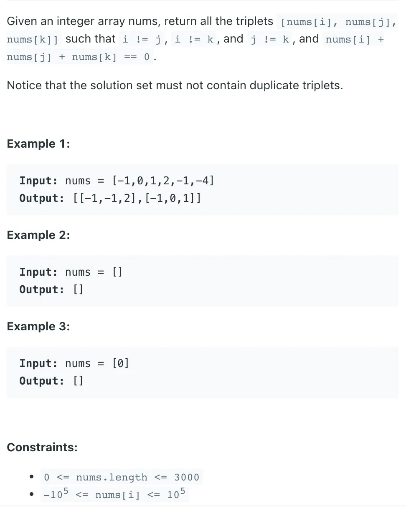

15. 3Sum
考過的公司：Amazon、Bytedance、tiktok
Question

✍🏽 My Solution
Runtime: 131 ms, faster than 30.23% of Java online submissions for 3Sum.
Memory Usage: 105.4 MB, less than 22.78% of Java online submissions for 3Sum.
class Solution {
public List<List<Integer>> threeSum(int[] nums) {
Arrays.sort(nums);
List<List<Integer>> result = new ArrayList<>();
HashMap<Integer, Integer> map = new HashMap<Integer, Integer>();
int n = nums.length;
for (int i = 0; i < n; i++) {
map.put(nums[i], i);
}
for (int i = 0; i < n; i++) {
if (i != 0 && nums[i] == nums[i-1]) continue;
for (int j = i+1; j < n; j++) {
if (j != i+1 && nums[j] == nums[j-1]) continue;
int key = -1*(nums[i] + nums[j]); //a+b+c=0, c = -b-a = -(b+a);
if (map.containsKey(key)) {
int k = map.get(key);
if (k > j) {
List<Integer> listItem = new ArrayList<>();
listItem.add(nums[i]);
listItem.add(nums[j]);
listItem.add(nums[k]);
result.add(listItem);
}
}
}
}
return result;
}
}
func threeSum(nums []int) [][]int {
sort.Ints(nums)
res := [][]int{}
m := make(map[int]int)
for i, num := range nums {
m[num] = i
}
for i := 0; i < len(nums); i++ {
if i > 0 && nums[i] == nums[i-1] {
continue
}
for j := i+1; j < len(nums); j++ {
if j > i+1 && nums[j] == nums[j-1] {
continue
}
key := -1 * (nums[i] + nums[j])
if k, ok := m[key]; ok {
if k > j {
res = append(res, []int{nums[i], nums[j], key})
}
}
}
}
return res
}
🧠 Thought Process
- Why did I choose this particular implementation?
- 哈希表
- What is the time/space complexity of my solution? How do I know?
- time: 最壞O(n^2) 最好O(1)
- space: O(n)
- What mistakes did I make?
- 不熟ArrayList用法，寫錯syntax
- 沒有判斷 k > j 才加入結果數組
- 去重複的時候忘了處理邊界條件
- 加List的時候放錯地方
- What can I do next time to make sure I don't make the same mistakes again?
- 多練習
Solution #1 [排序 + 双指针]
Runtime: 24 ms, faster than 85.38% of Java online submissions for 3Sum. Memory Usage: 58.3 MB, less than 68.21% of Java online submissions for 3Sum.
/*
1.先將數組排序，這樣比較好剪枝
2.定位第一個數，然後將雙指針指向除了第一個數之外的第一個數和最後一個數，分別是i j k
3.i+j+k=0 =>找到
i+j+k>0 =>k--
i+j+k<0 =>j++
4.去重: 當j=j+1 k=k-1就跳過
*/
class Solution {
public static List<List<Integer>> threeSum(int[] nums) {
List<List<Integer>> ans = new ArrayList();
int len = nums.length;
if(nums == null || len < 3) return ans;
Arrays.sort(nums); // 排序
for (int i = 0; i < len ; i++) {
if(nums[i] > 0) break; // 如果当前数字大于0，则三数之和一定大于0，所以结束循环
if(i > 0 && nums[i] == nums[i-1]) continue; // 去重
int L = i+1;
int R = len-1;
while(L < R){
int sum = nums[i] + nums[L] + nums[R];
if(sum == 0){
ans.add(Arrays.asList(nums[i],nums[L],nums[R]));
while (L<R && nums[L] == nums[L+1]) L++; // 去重
while (L<R && nums[R] == nums[R-1]) R--; // 去重
L++;
R--;
}
else if (sum < 0) L++;
else if (sum > 0) R--;
}
}
return ans;
}
}
//O(n^2) 这是因为对于nums数组中的每个元素，我们使用两个指针来遍历子数组nums[i+1:]，
//并找到加起来等于-nums[i]的配对，这需要O(n)时间。因此，总体时间复杂度为O(n^2)。
//这个解决方案的空间复杂度是O(1)，因为我们只用几个变量来存储两个指针的索引和中间结果，
func threeSum(nums []int) [][]int {
sort.Ints(nums)
res := [][]int{}
for i := 0; i < len(nums)-2; i++ {
if nums[i] > 0 {
break
}
if i > 0 && nums[i] == nums[i-1] {
continue
}
l, r := i+1, len(nums)-1
for l < r {
sum := nums[i] + nums[l] + nums[r]
if sum == 0 {
res = append(res, []int{nums[i], nums[l], nums[r]})
for l < r && nums[l] == nums[l+1] {
l++
}
for l < r && nums[r] == nums[r-1] {
r--
}
l++
r--
} else if sum < 0 {
l++
} else {
r--
}
}
}
return res
}
Explanation (in my words)
- How does their solution work?
- 标签：数组遍历
- 首先对数组进行排序，排序后固定一个数 nums[i]，再使用左右指针指向 nums[i] 后面的两端，数字分别为 nums[L] 和 nums[R]，计算三个数的和 sum 判断是否满足为 0，满足则添加进结果集
- 如果 nums[i]大于 0，则三数之和一定大于0，则后面的数字也是大于零（排序后是递增的）结束循环
- 如果 nums[i]== nums[i-1]，则说明该数字重复，会导致结果重复，所以应该跳过
- 当 sum == 0 时，nums[L] == nums[L+1] 则会导致结果重复，应该跳过，L++
- 当 sum == 0 时，nums[R] == nums[R-1] 则会导致结果重复，应该跳过，R--
- 忘了寫回圈！！！！！
- 忘了去重複
- What is the space/time complexity of their solution?
- time: O(n^2)，n 為數組長度
- space: O(1)